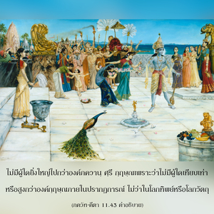

พระองค์ทรงเป็นพระบิดาแห่งปรากฏการณ์ทางจักรวาลที่สมบูรณ์ของสิ่งที่เคลื่อนไหวและไม่เคลื่อนไหวนี้ พระองค์ทรงเป็นผู้นำที่ควรเคารพบูชา ทรงเป็นพระอาจารย์ทิพย์สูงสุด ไม่มีผู้ใดเทียบเท่าพระองค์ และไม่มีผู้ใดสามารถมาเป็นหนึ่งเดียวกับพระองค์ แล้วจะมีผู้ใดภายในสามโลกยิ่งใหญ่ไปกว่าพระองค์ได้อย่างไร โอ้ พระผู้เป็นเจ้าแห่งพลังที่วัดไม่ได้

องค์ภควานฺ ศฺรี กฺฤษฺณทรงเป็นที่เคารพบูชาในฐานะที่เป็นพระบิดาสำหรับบุตร พระองค์ทรงเป็นพระอาจารย์ทิพย์เนื่องจากเดิมทีพระองค์ทรงให้คำสอนพระเวทนี้แก่พระพรหม และมาถึงบัดนี้ยังทรงให้คำสอน ภควัท-คีตา แก่อรฺชุน ฉะนั้น พระองค์ทรงเป็นพระอาจารย์ทิพย์องค์แรก และพระอาจารย์ทิพย์ผู้ที่เชื่อถือได้องค์ใดในปัจจุบันนี้จะต้องสืบทอดมาจากสาย ปรมฺปรา ที่เริ่มมาจากองค์กฺฤษฺณ หากผู้ใดไม่ใช่ผู้แทนขององค์กฺฤษฺณจะไม่สามารถมาเป็นครู หรือพระอาจารย์เกี่ยวกับวิชาทิพย์เหนือโลกนี้ได้
องค์ภควานฺทรงได้รับการถวายความเคารพในทุกๆ ด้าน พระองค์ทรงเป็นผู้ยิ่งใหญ่ที่ไม่สามารถประมาณได้ ไม่มีผู้ใดยิ่งใหญ่ไปกว่าองค์ภควานฺ ศฺรีกฺฤษฺณ เพราะว่าไม่มีผู้ใดเทียบเท่า หรือสูงกว่าองค์กฺฤษฺณภายในปรากฏการณ์ ไม่ว่าในโลกทิพย์ หรือโลกวัตถุทุกๆ ชีวิตด้อยกว่า ไม่มีผู้ใดเกินไปกว่าพระองค์ ได้กล่าวไว้ใน เศฺวตาศฺวตร อุปนิษทฺ (6.8) ว่า
น ตสฺย การฺยํ กรณํ จ วิทฺยเต
น ตตฺ-สมศฺ จาภฺยธิกศฺ จ ทฺฤศฺยเต
องค์ภควานฺ ศฺรีกฺฤษฺณทรงมีประสาทสัมผัส และร่างกายเหมือนมนุษย์ธรรมดา แต่สำหรับพระองค์จะไม่มีข้อแตกต่างระหว่างประสาทสัมผัส ร่างกาย จิตใจ และตัวพระองค์เอง คนโง่เขลาผู้ไม่รู้จักพระองค์อย่างสมบูรณ์จะกล่าวว่าองค์กฺฤษฺณทรงแตกต่างไปจากดวงวิญญาณของพระองค์ จิตใจ หัวใจ และทุกสิ่งทุกอย่างของพระองค์กฺฤษฺณทรงมีความสมบูรณ์บริบูรณ์ ดังนั้น กิจกรรมและพลังอำนาจของพระองค์จึงสูงสุด ได้กล่าวไว้ว่าถึงแม้ว่าทรงไม่มีประสาทสัมผัสเหมือนพวกเราพระองค์ทรงสามารถปฏิบัติกิจกรรมทางประสาทสัมผัสทั้งหมดได้ ดังนั้น ประสาทสัมผัสของพระองค์ทรงไม่ใช่ไม่สมบูรณ์หรือมีขีดจำกัด ไม่มีผู้ใดยิ่งใหญ่ไปกว่าพระองค์ ไม่มีผู้ใดสามารถเทียบเท่าพระองค์ และทุกๆ คนต่ำกว่าพระองค์
ความรู้ พละกำลัง และกิจกรรมทั้งหมดขององค์ภควานฺทรงเป็นทิพย์ ดังที่ได้กล่าวไว้ใน ภควัท-คีตา (4.9) ดังนี้
ชนฺม กรฺม จ เม ทิวฺยมฺ
เอวํ โย เวตฺติ ตตฺตฺวตห์
ตฺยกฺตฺวา เทหํ ปุนรฺ ชนฺม
ไนติ มามฺ เอติ โส ’รฺชุน
ผู้ใดรู้ร่างทิพย์ กิจกรรมทิพย์ และความสมบูรณ์ทิพย์ขององค์กฺฤษฺณหลังจากออกจากร่างนี้ไปจะกลับไปหาพระองค์ และไม่ต้องกลับมายังโลกที่เต็มไปด้วยความทุกข์นี้อีกต่อไป ฉะนั้น เราจึงควรรู้ว่ากิจกรรมขององค์กฺฤษฺณทรงไม่เหมือนกับผู้ใด นโยบายที่ดีที่สุดคือเราควรปฏิบัติตามหลักธรรมขององค์กฺฤษฺณเพราะเช่นนี้จะทำให้เราสมบูรณ์ ยังได้กล่าวไว้ว่าไม่มีผู้ใดเป็นเจ้านายขององค์กฺฤษฺณทุกคนเป็นผู้รับใช้ของพระองค์ ไจตนฺย-จริตามฺฤต (อาทิ 5.142) ยืนยันไว้ว่า เอกเล อีศฺวร กฺฤษฺณ, อาร สพ ภฺฤตฺย กฺฤษฺณ เพียงพระองค์เดียวเท่านั้นที่ทรงเป็นองค์ภควานฺ และทุกคนเป็นผู้รับใช้ของพระองค์ ทุกคนปฏิบัติตามคำสั่งของพระองค์ ไม่มีผู้ใดสามารถปฏิเสธคำสั่งของพระองค์ได้ ทุกคนปฏิบัติตามคำแนะนำขององค์กฺฤษฺณในฐานะที่อยู่ภายใต้การดูแลของพระองค์ ดังที่ได้กล่าวไว้ใน พฺรหฺม-สํหิตา ว่าพระองค์ทรงเป็นแหล่งกำเนิดของแหล่งกำเนิดทั้งปวง